Stringy, fresh mozzarella; a crust so crispy its crack can be heard over the voices in the crowded restaurant; and, the unique amalgamation of Mediterranean flavors
in a freshly baked pizza have made Rome's Pizza a household favorite. However, after struggling to order my favorite Taj Mahal Pizza through their online system,
I decided to redesign it so that others can experience amazing pizza at its finest!
Clickable text is not well distinguished which hinders the interface's learnability. For example, The PROBLEMS ORDERING? text is an uncomprehendable element and a button would
be much clearer. The same goes for MENU and LOG IN.
The phone number is followed by (Change), which is clickable. This is not immediately noticeable and has an inconsistent format with PROBLEMS ORDERING?
Clicking this text allows you to change the Rome's Pizza location that you are ordering from, however,
this is repetitive because there is a Change Location button.
Changing the order type is not immediately noticeable and can be handled in SCHEDULE ORDER.
Though green and orange form a color harmony, the colors make the text difficult to read, especially since the text is small and unresponsive. This hinder the interface's usability.
Furthermore, the company's logo is green and red, and therefore, the color scheme is inconsistent.
Image quality is poor.
The salad description is for pizzas and has a typo with "Served" which is confusing and hinders learnability.
The menu items are cluttered and lack vertical spacing. This makes the grouping difficult to navigate and quickly find items.
The logo is out of place and does not fit with the background.
Tuesday in the footer should be capitalized.
Accessibilty
Rome's Pizza's online menu was evaluated using WebAIM WAVE and the JAWS screen-reader to evaluate its accessiblity. There were no errors or issues
regarding's the website's color contrasts, however, WAVE noted that the webpage was missing a heading and page regions.
However, the webpage was not very accessible when using a screen-reader. JAWS was only able to access the SCHEDULE ORDER and View/Change Location
buttons. None of the food categories were selectable by the screen-reader and all text that were hyperlinks were unaccessible. Finally,
none of the pictures have an Alt tag so the screen-reader does not read what each of the options are.
Addressing these Problems with Low-Fidelity Wireframing
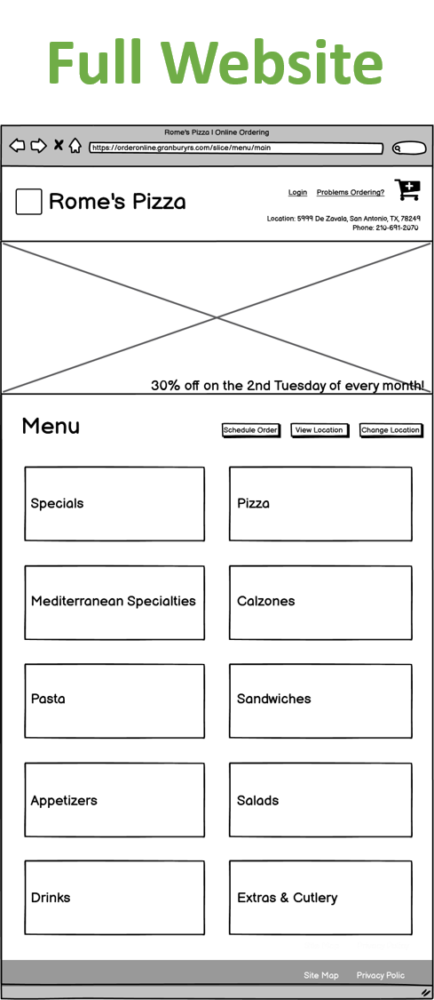
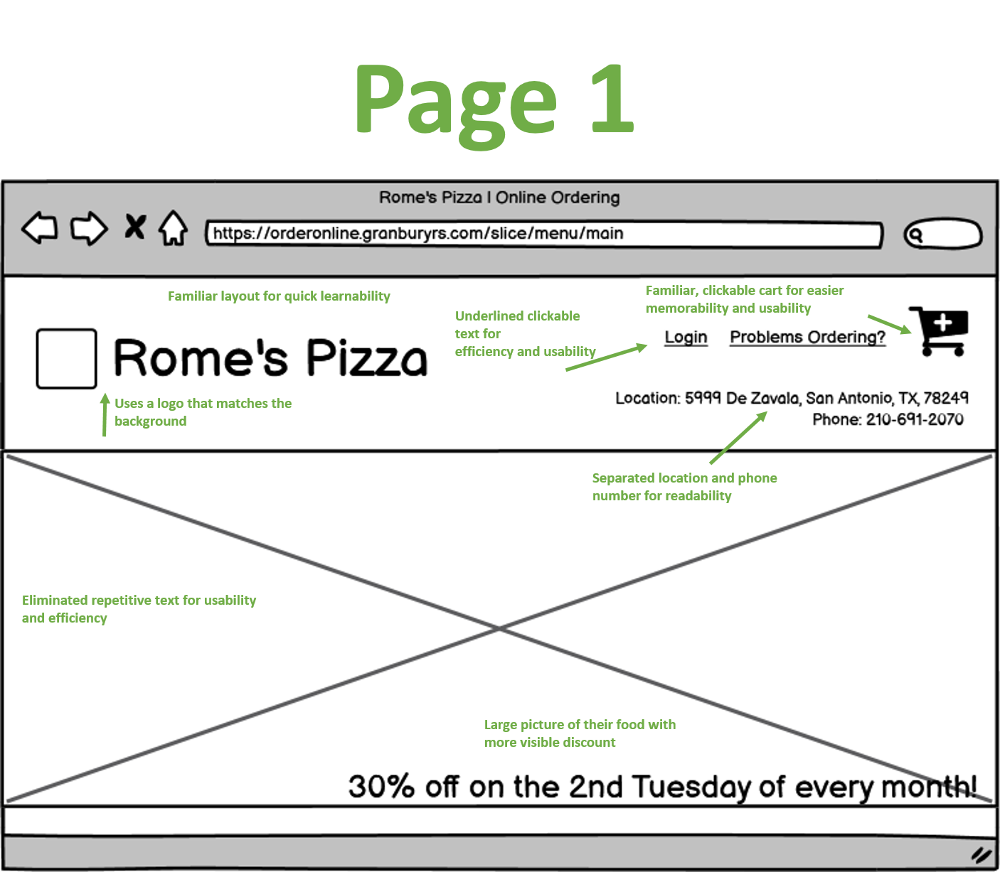
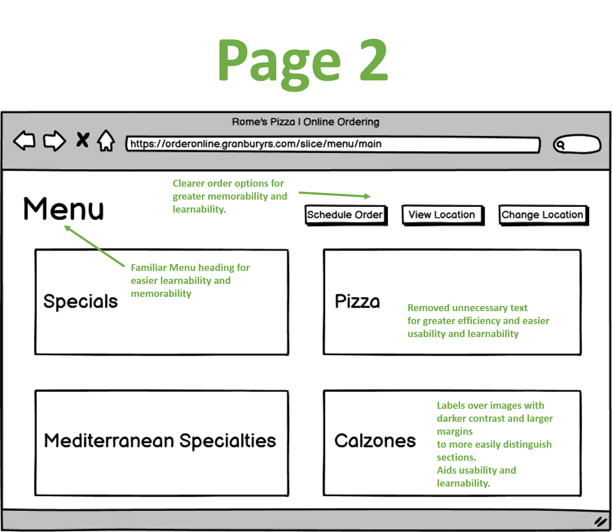
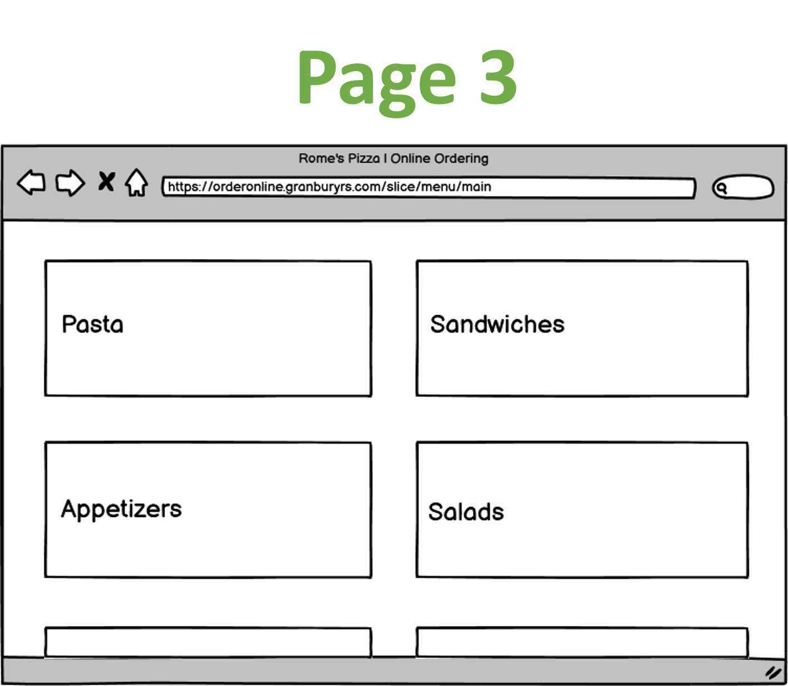
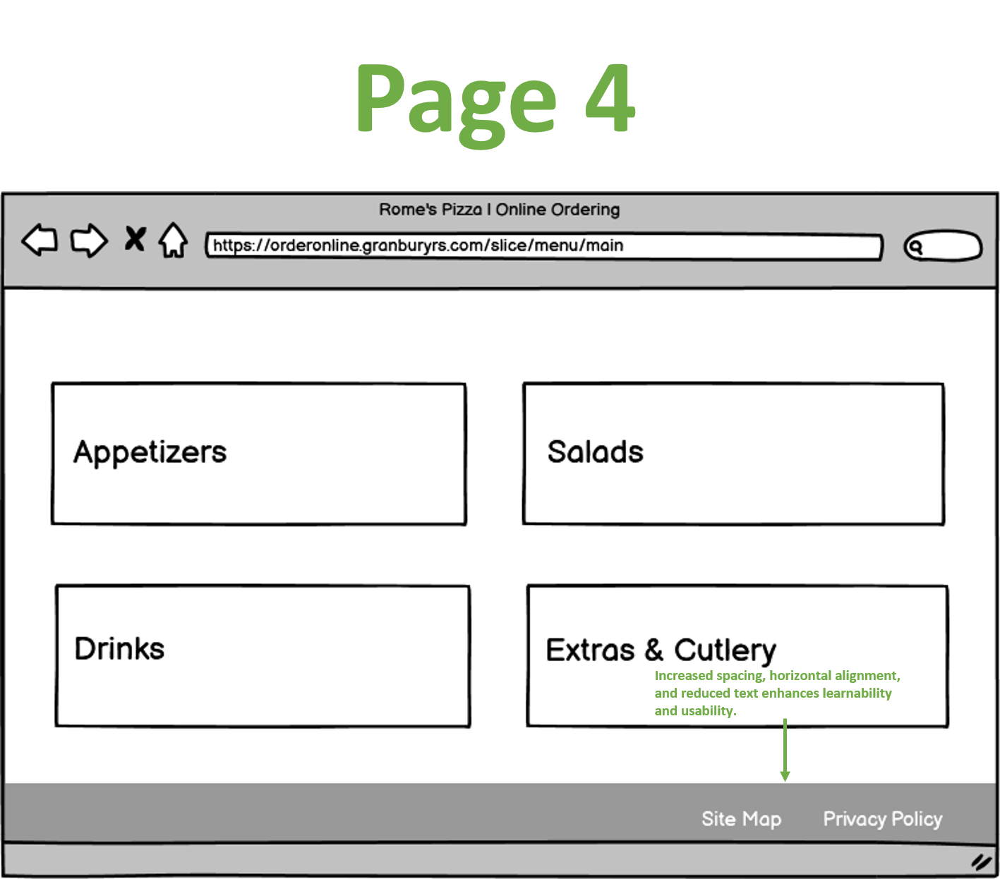
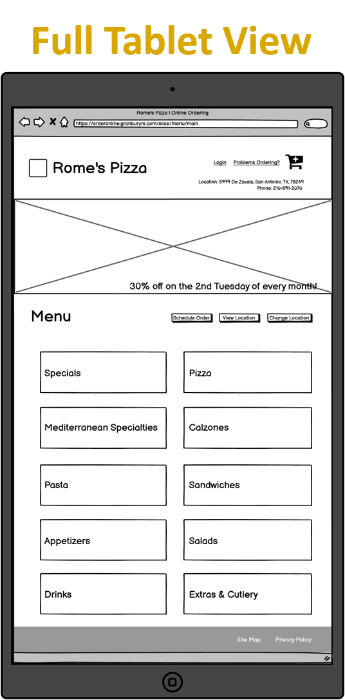
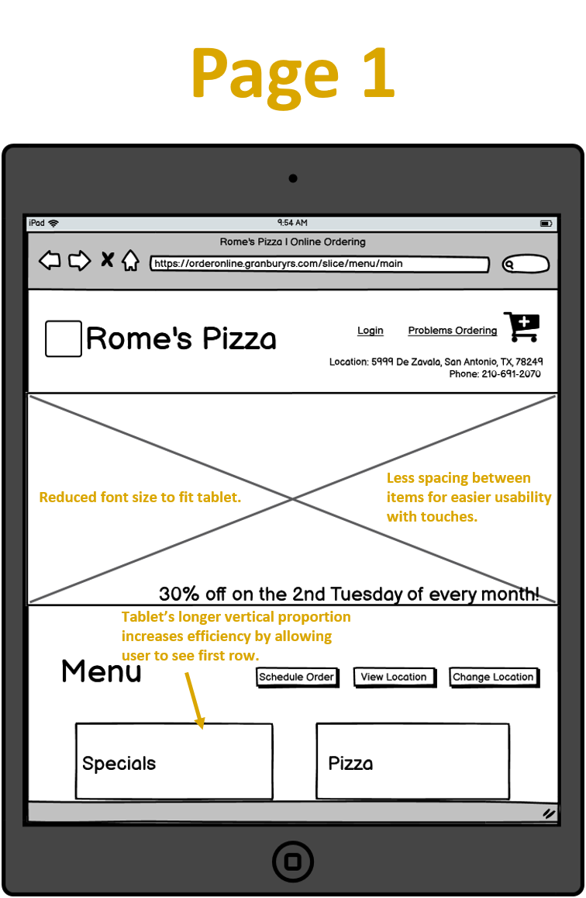
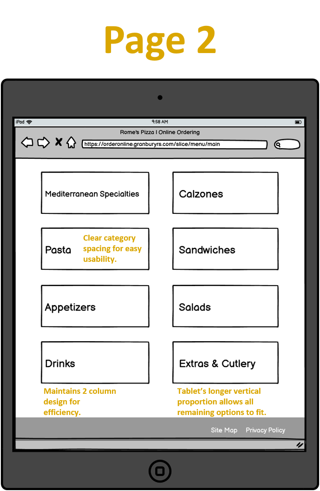
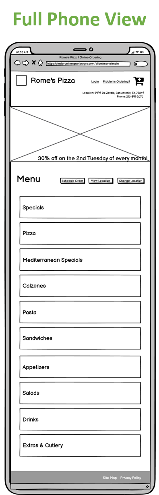
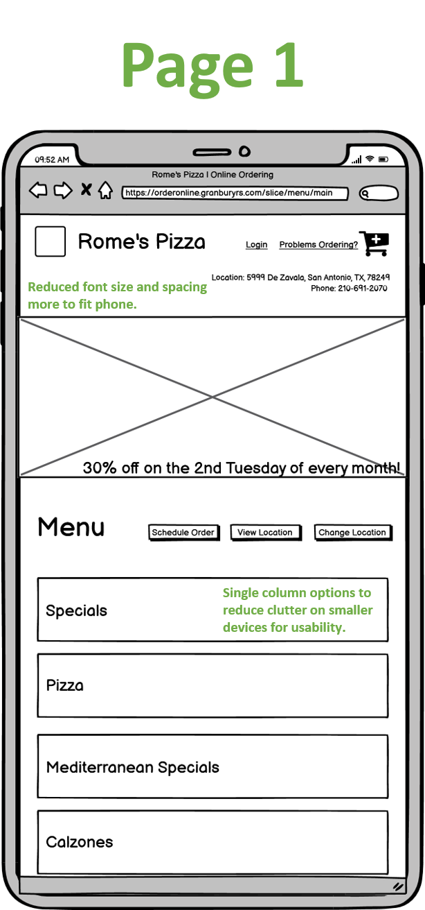
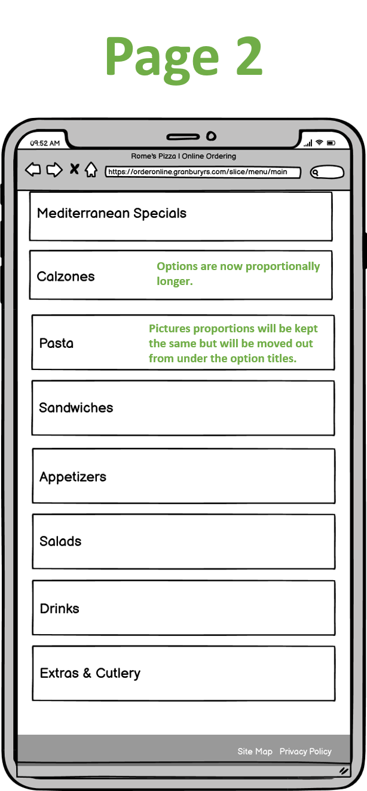
Let's Add a Splash of Color: High-Fidelity Prototyping
I checked that my redesign scaled naturally on a mobile phone, tablet, and desktop. Since I used @media queries, I was able to adjust the formatting for each device.
I changed the browser's font size to see whether the font size adjusted well. Though, my font size did not change, my font is readable on all devices
because it was adjusted using @media queries.
I tested my redesign with different languages like Korean and Japanese, and my website was able to translate most fields. Since some of my titles are images,
those were not translated, but all other texts translated well.
The only issue shown by WebAIM WAVE was that there was not enough contrast between the text and the background in the footer. The program also noted that my
website does not have a header, however, it noted that there were 13 alternative texts identified.
Using the JAWS screen-reader my website was able to navigate to all of the buttons, except for the pictures. However, since my pictures had an Alt tag, it
was able to read those aloud.
Insights and Takeaways
This project revealed how website features determine its usability, learnability, and memorability. In particular, it is critical to assess
whether a website is accessible to every user, how easily it allows the user to complete the task at hand, and if the layout is intuitive and
easy to learn and use. I found that animations that respond to user actions greatly increase a website's usability, familiar layouts
allow users to quickly learn and remember how to use a webpage, and that clear buttons and clickable text are critical in guiding the user.